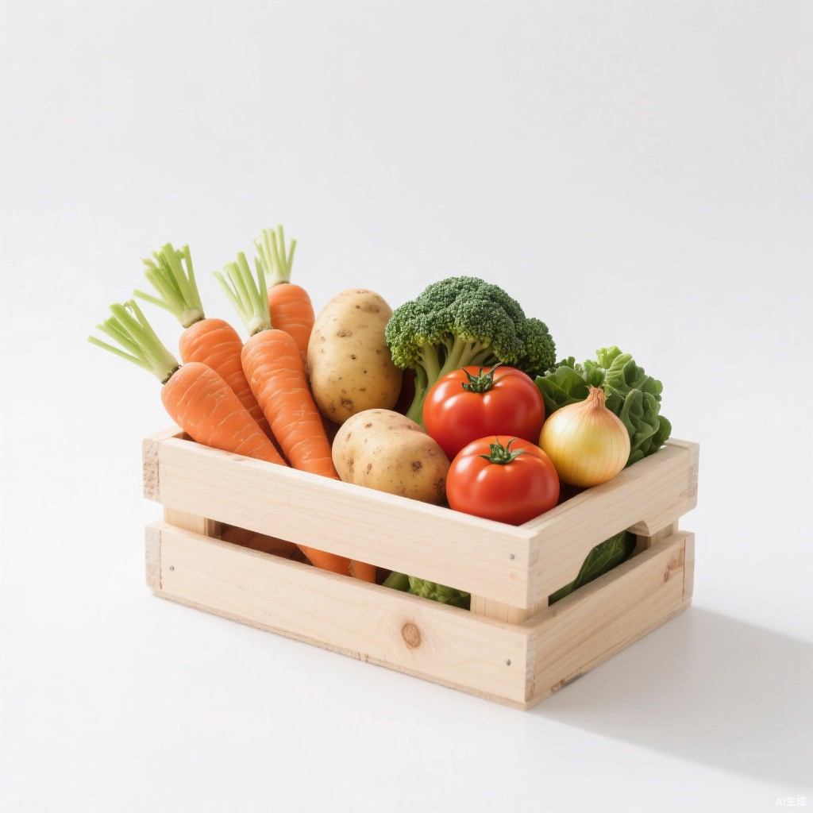

A13d白底主图 · 蔬菜礼盒
电商主图 · media=image · square_hd
纯白无缝背景木质礼盒主体均匀棚拍柔光
门禁 PASS · 110 KB
提示词 / 负向
Clean e-commerce main image: a light pine wooden crate filled with fresh cool-climate vegetables, crisp orange carrots with green tops, smooth potatoes, glossy red tomatoes, deep green broccoli, small yellow onions, arranged neatly and overflowing naturally, pure white seamless background, soft even studio softbox light, subtle contact shadow, ultra sharp texture detail, commercial catalog quality, centered composition, generous margin, no text
负向：text, watermark, logo, cluttered background, dim lighting, wilted leaves, dirty produce, busy props